מה יש כאן
- 99 קבצי SVG מקוריים מתוך ארכיון הגרפיקות של האפליקציה — כולם מוצגים למטה וזמינים כקבצים נפרדים בריפו.
- 9 צילומי מסך מהאפליקציה (פרטים אישיים הושמטו) שמראים איך האלמנטים משתלבים בפועל.
- פלטת צבעים שנמדדה מהקבצים ומהצילומים.
הורדה של כל הקבצים בבת אחת: ZIP של הריפו (כולל תיקיית assets/svg/).
האלמנטים החוזרים נצפה באפליקציה
- עולם שמיים ועננים. רקע מסכי המסלול הוא שמיים כחולים בהירים במעבר גוון עדין (בערך
#A0D1FAעד#B7DBF9), ועליהם עננים לבנים מצוירים עם הצללה אפורה-כחלחלה (#DCE8EF). תשע וריאציות ענן קיימות בקבצים (Cloud1–Cloud9). - מגילות תורה זהובות ככפתורי שלבים. מסך הבית הוא מסלול זיגזג בעננים, וכל שלב הוא מגילה זהובה (
TorahUnlocked*.svg) עם שם השלב; מגילה נעולה אפורה (TorahLocked.svg). - כפתורי "סקווירקל" זהובים. ריבועים מאוד מעוגלים בזהב
#FFC727עם שוליים כהים#E5B323שיוצרים תחתית תלת-ממדית, וטקסט צורח#37474Fבמרכז. כך נראים כפתורי מצבי הלימוד (LevelBox*). - וי ירוק על שלב שהושלם. עיגול ירוק עם וי לבן מודבק על פינת הכפתור — מוסכמה חוזרת לסימון השלמה (LevelBox_PasukPasukCompleted).
- מטבע הטעמים. עיגול זהב עם סמל נגינה (TaamimLevelSymbol) — משמש כנקודת פתיחה/מטבע במסלול.
- סוכריה = נקודות. אייקון הסוכריות (CandyIcon) בצורח הוא מטבע הניקוד; מונה הנקודות מופיע כגלולת זהב. יש גם גלולת "רצף" (streak) עם להבה.
- שלושה ייצוגים לאותו טעם. לכל טעם קיימים: קופסת זהב (Taamim/*Box), כדור זהב (TaamimBalls/*Ball), וסמל נקי בצורח ללא רקע (TaamimNoBackground/*). שמות הקבצים עקביים לפי שם הטעם.
- כפתורי אייקון עגולים במתאר זהב. טבעת זהב
#E6AA00ומילוי זהבבהר#FFE393— נגינה, השהיה, עין, מהירות, חצים. - כרטיס קריאה זהב-בהיר. טקסט התורה יושב על כרטיס ענק מעוגל
#FFECB2מעל רקע שמנת; הטקסט שחור בגופן תנ"כי מסורתי עם ניקוד וטעמים. - שורת שליטה תחתונה צבעונית. נגינה ירוקה
#4CB050, הקלטה אדומה#FF5353(עגולים), ניווט הבא/קודם כגלולות זהב/אפור; כפתור סיום הופך לירוק. - חלוניות קופצות בשני נוסחים. חלונית פעולה צהבהרה
#FFF3BFעם כפתור ראשי צורח מלא וכפתור משני במתאר עם טקסט סגלגל#664FA1; חלונית בחירה בלילך#ECE6F0עם שדה חיפוש שמנת#FFF8DE. - תגי הישגים משושים. משושים צורחים עם מנעול (נעול) או גביע זהב (הושג) ותווית מתחת.
- פס עליון קרמי עם אייקוני זהב. רקע בהיר
#F2F1F7, אייקוני קו בזהב (הגדרות, מיקרופון, מכתב), ולוגו "טעמי״ם" זהב.
פלטת צבעים
נמדד מקובצי ה-SVG ומצילומי המסך. גוונים שנדגמו מצילומי JPEG הם קירוב של ±2.
#FFC727#E5B323#E6AA00#FFE393#FFECB2#FFF3BF#37474F#A0D1FA#B7DBF9#64B5F6#DCE8EF#F9F3E7#F2F1F7#4CB050#FF5353#664FA1#ECE6F0#FFF8DEאיך זה נראה באפליקציה
צילומי מסך שסופקו על ידי הצוות; שדות אישיים הושמטו מהצילומים של ההגדרות והמורה.
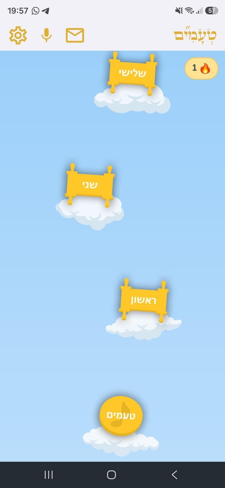
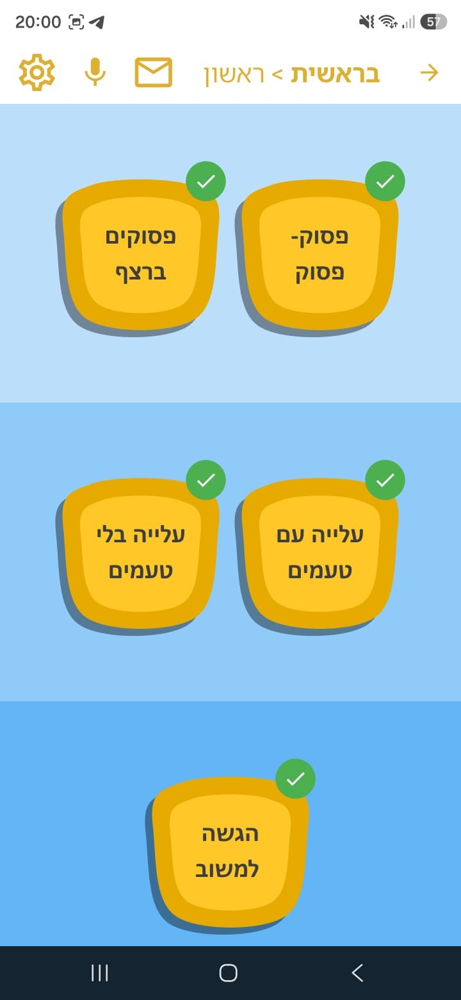
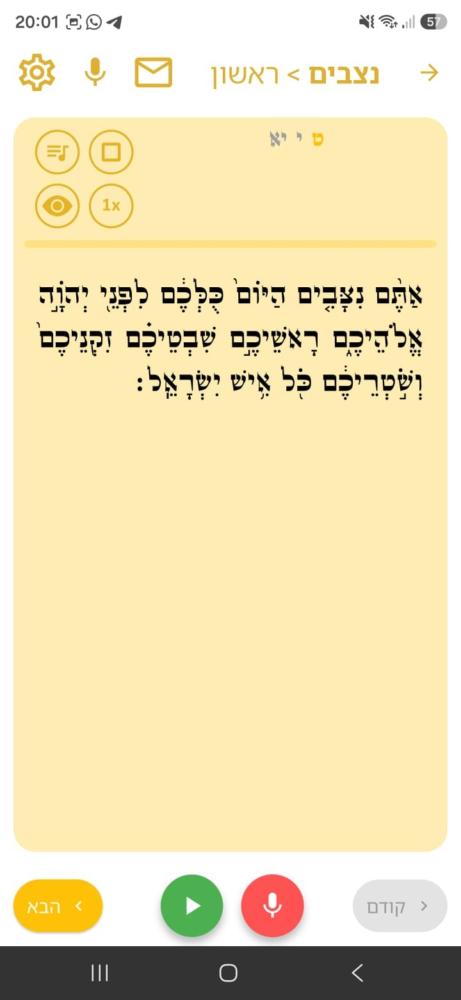
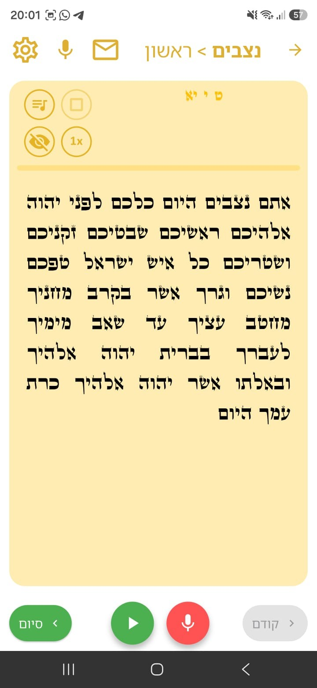
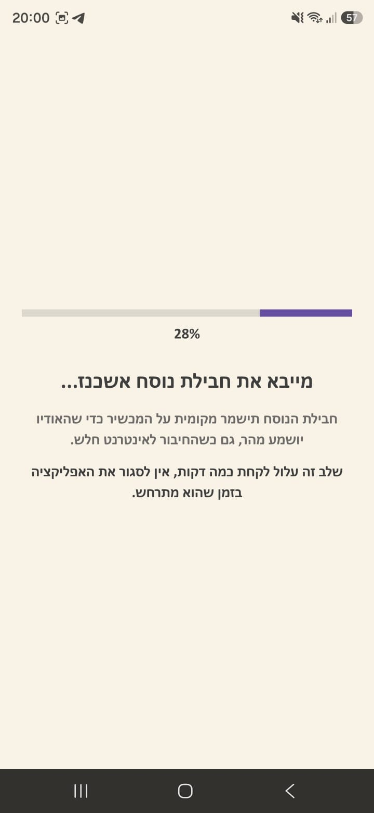
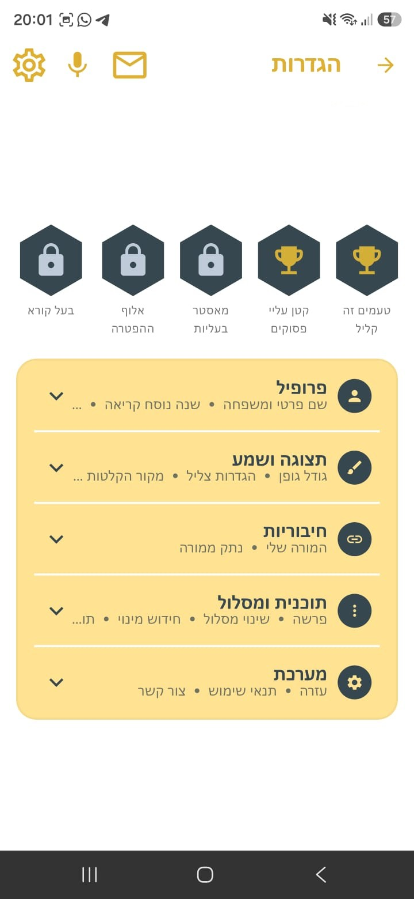
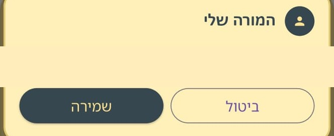
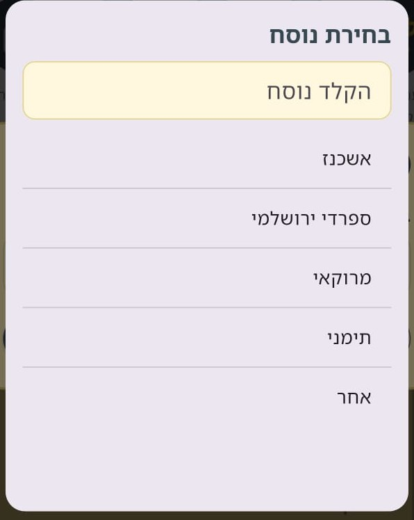
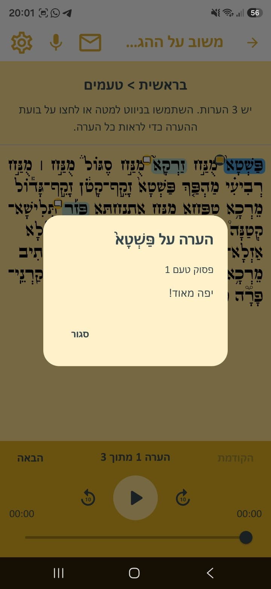
טיפוגרפיה נצפה
- גופן הממשק: עברי מעוגל ושמן, עם מראה ידידותי ומשחקי — בכפתורים, בכותרות ובלוגו. קובץ הגופן לא נמסר בארכיון, ולכן אין כאן שם גופן מדויק.
- גופן טקסט התורה: גופן תנ"כי מסורתי עם ניקוד וטעמים מלאים. גם הוא לא נמסר.
- גופן עמוד זה הוא Open Sans — בחירה של עמוד התיעוד בלבד, לא חלק משפת העיצוב של האפליקציה.
כל קבצי הגרפיקה
כל הקבצים יושבים בריפו תחת assets/svg/ — אפשר לקשר אליהם ישירות או להוריד את ה-ZIP למעלה. שמות הקבצים הם המקוריים מהארכיון.
אלמנטים כלליים
מסך הבית, ניווט, שלבים, אייקוני מערכת — הקבצים שברמה הראשית של הארכיון.
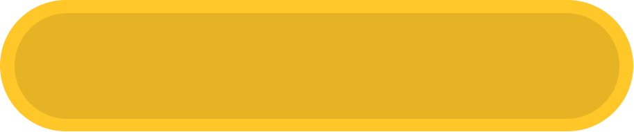
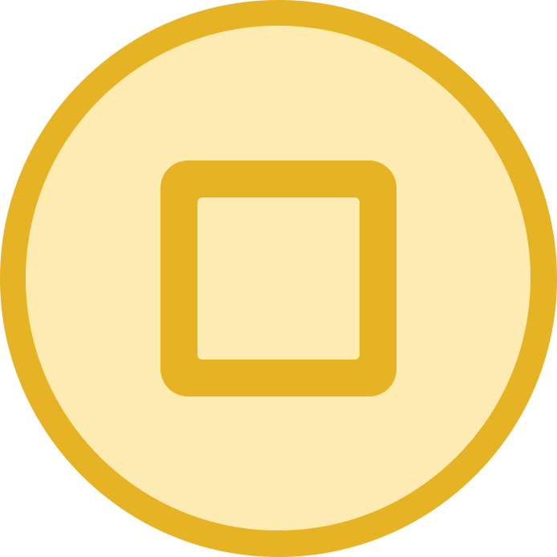
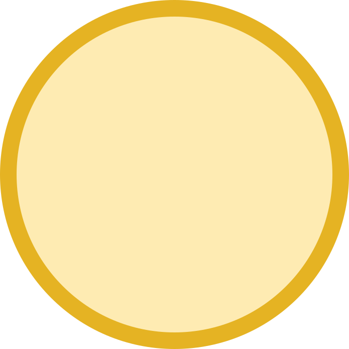
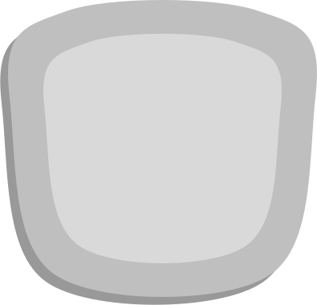
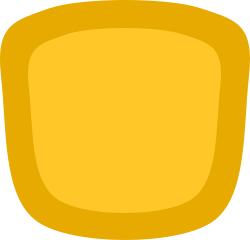
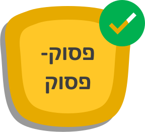
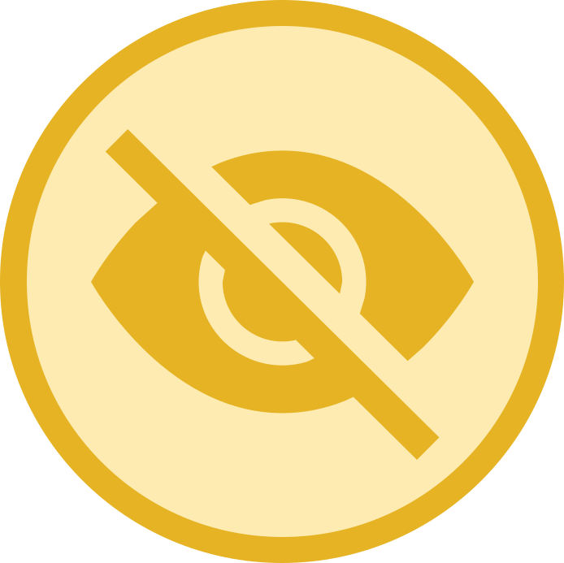
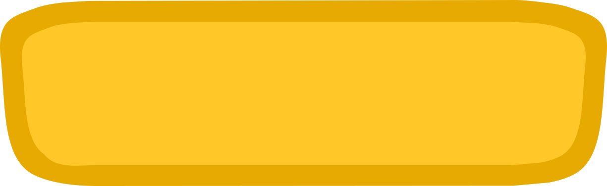
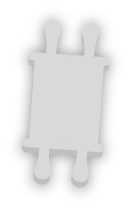
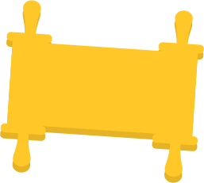
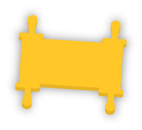
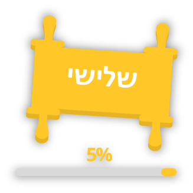
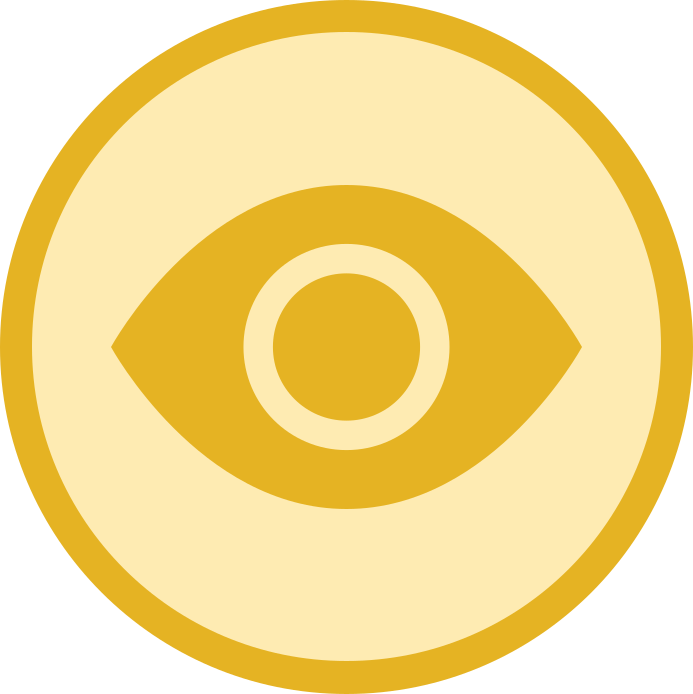
קופסאות הטעמים
קופסת זהב עם סמל הטעם בצורח — ייצוג הטעם כפריט שניתן לבחירה/גרירה.


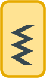

כדורי הטעמים
אותו רעיון בצורת כדור זהב — וריאנט משחקי של אותו אוצר סמלים.
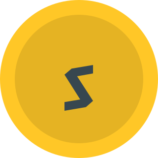
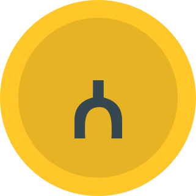
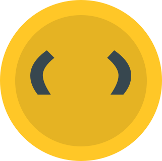
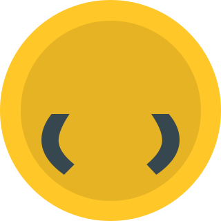
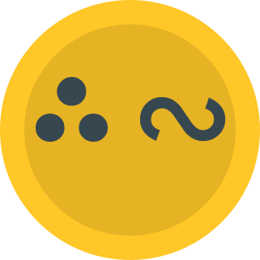

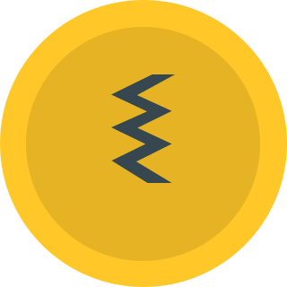
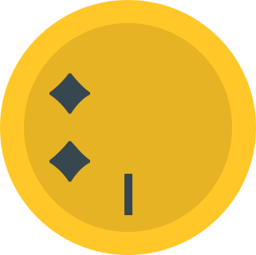

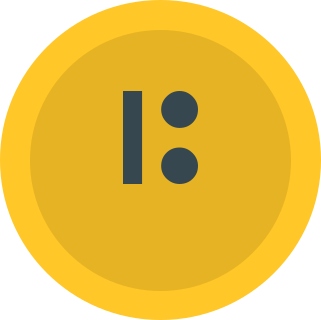
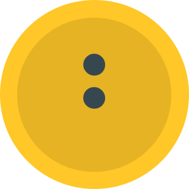
סמלי טעמים נקיים
סמל הטעם לבו בצורח, בלי קופסה — לשילוב על רקעים וטקסט.
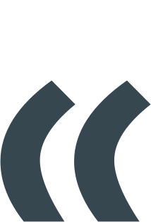
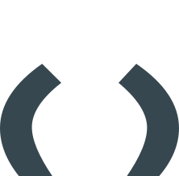
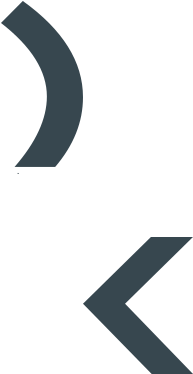
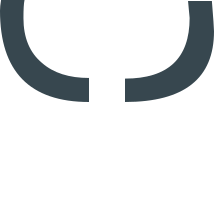
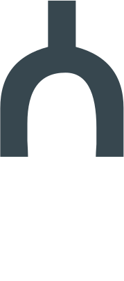

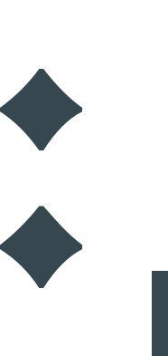
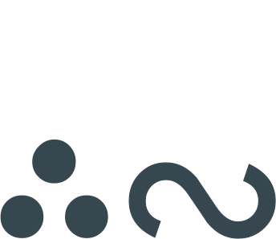
מהארכיון לדף נחיתה הצעות — לא נצפו באפליקציה
- Hero: רקע שמיים עם 2–3 עננים מהקבצים, לוגו, כותרת וכפתור פעולה ראשי בצורת מגילה זהובה או סקווירקל זהב.
- יתרונות/פיצ'רים: כרטיסים על בסיס צורת הסקווירקל או הכרטיס הזהב-בהיר, עם כדורי הטעמים כאייקונים.
- התקדמות/גמיפיקציה: להשתמש במטבע הטעמים, בסוכריית הנקודות ובווי הירוק כמוטיבים של הישג.
- היררכיית כפתורים: ראשי זהב מלא, שני במתאר זהב, הזהרה/הקלטה באדום, אישור סופי בירוק.
- גופן: לקירוב ויזואלי של הממשק אפשר לנסות גופן עברי מעוגל חופשי (למשל Varela Round מ-Google Fonts) — זו השערה בלבד, וכדאי לוודא מול הצוות מה הגופן המקורי.
- כיווניות: הכל עברית RTL מהיסוד, גם בדף הנחיתה.
הערות ליישום
- המבנה בריפו:
assets/svg/(הגרפיקות),assets/screens/(הצילומים),index.html(עמוד זה). - שמות הקבצים מקוריים וכוללים גרש בודד (למשל
P'sikBox.svg) — בקישורי HTML יש לקודד אותו כ-%27. - חלק מה-SVG נחתכו במקור ב-clipPath פנימי; הם מוצגים תקין כ-
<img>, אבל לעריכה וקטורית כדאי לפתוח בעורך. - מה שלא קיים בארכיון: קובץ גופן, קובץ לוגו נפרד (הלוגו כאן הוא חיתוך מצילום מסך), וגרפיקת היד/מנחה — אין להמציא אותם.